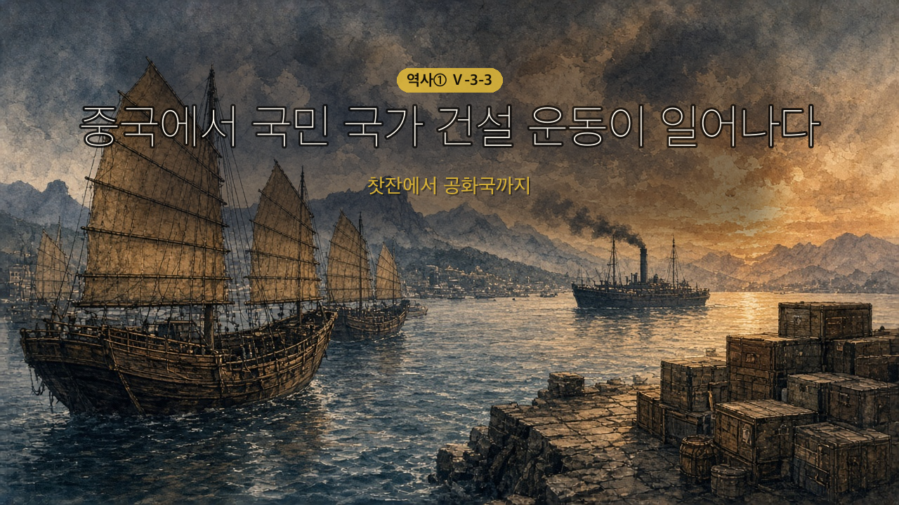
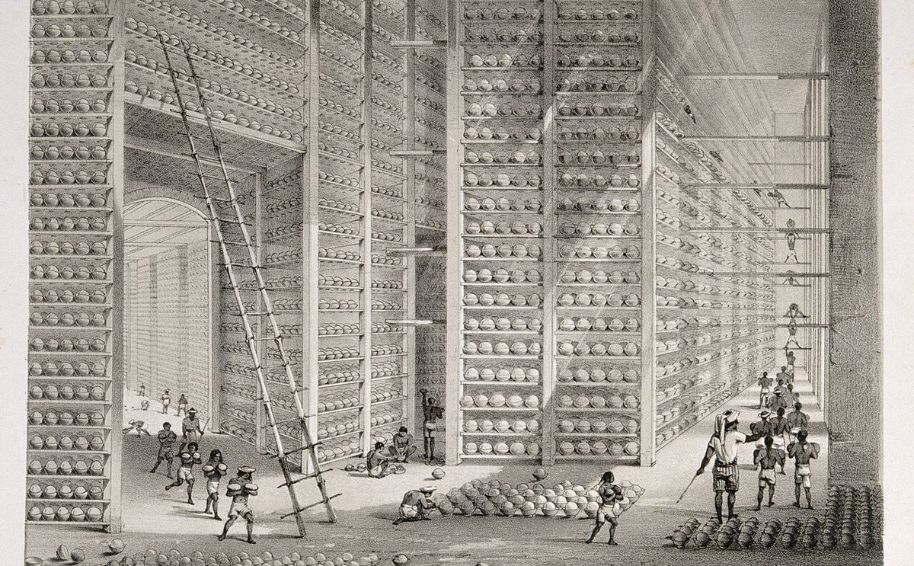
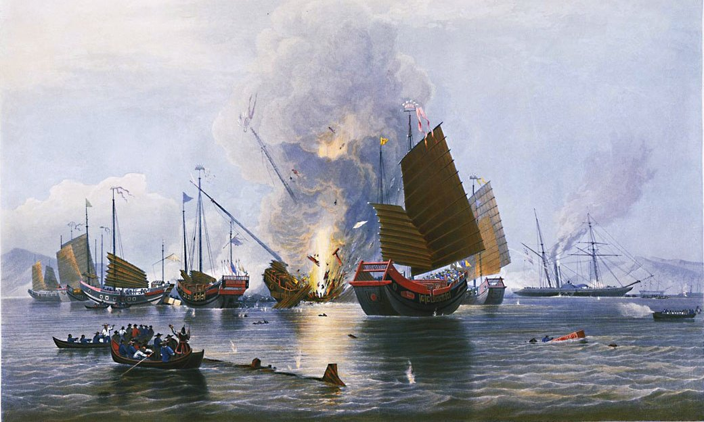
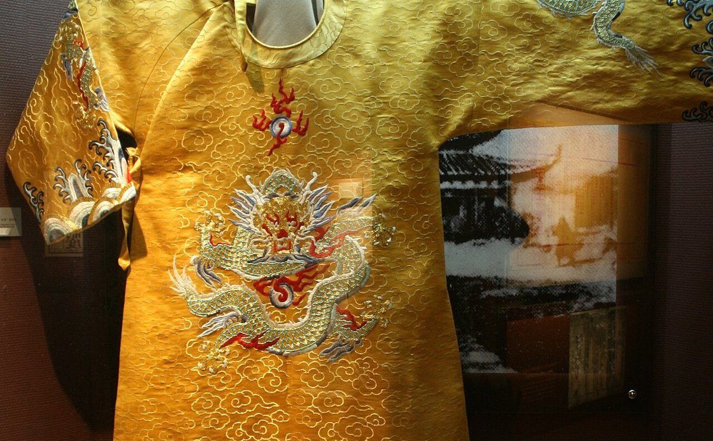
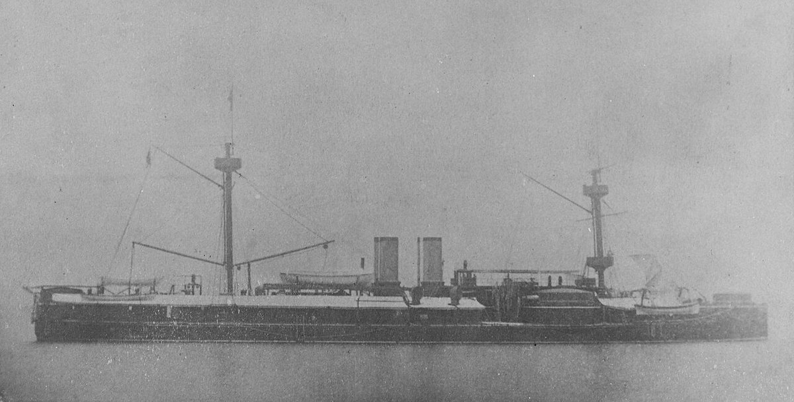
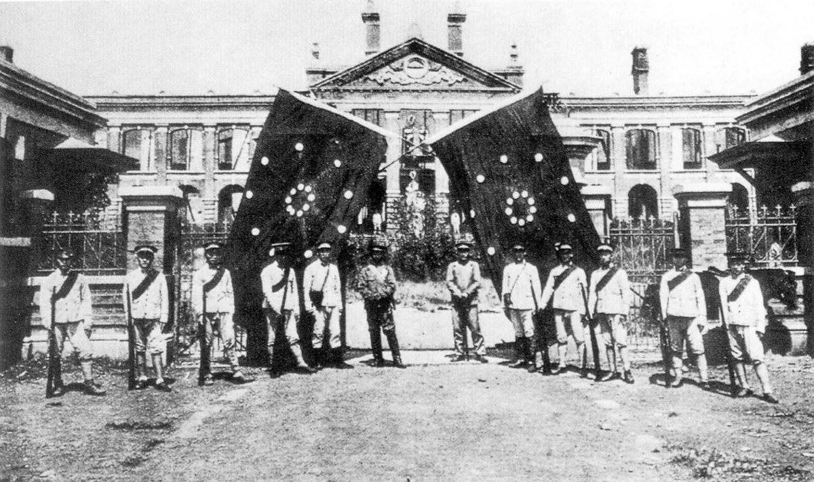

찻잔에서 공화국까지
중국의 개항 — 광저우 한 곳 무역 → 차 수입으로 은 유출 → 영국의 아편 밀수출(삼각 무역) → 제1차 아편 전쟁 → 난징 조약(1842, 홍콩·5개 항구·불평등 조약) → 애로호 사건·제2차 아편 전쟁 → 톈진·베이징 조약.
태평천국 운동 — 홍수전 · 만주족을 몰아내고 한족 국가 · 토지 균등 분배·남녀평등(천조 전무 제도) · 난징을 수도로 · 의용군과 외국 군대에 진압(1864).
양무운동과 변법자강 운동 — 이홍장: 서양 기술만 받아들여 부국강병 → 청일 전쟁 패배로 한계 / 캉유웨이: 메이지 유신을 본받아 의회·입헌 군주제 → 보수 세력의 반대로 실패.
의화단과 신해혁명 — 의화단 «청을 도와 서양 세력을 쫓아내자» → 8개국 연합군·신축 조약 / 쑨원·중국 동맹회·삼민주의 → 철도 국유화 반대 → 우창 봉기 → 신해혁명(1911) → 중화민국(1912) → 위안스카이·군벌.

📌 지난 시간(5-3-2)과 이어진다. 인도 사람들이 영국의 지배에 맞섰지? 영국은 그 인도 땅에서 기른 물건 하나를 배에 싣고 중국으로 갔어. 오늘은 두 시간짜리야. 1교시는 «문이 강제로 열리다», 2교시는 «기술이냐, 제도냐, 새 나라냐».
- 중국의 개항 과정을 설명할 수 있다.
- 중국에서 일어난 근대화 운동의 특징을 비교할 수 있다.
💡 오늘 딱 하나만 잡자 — 청은 전쟁에 져서 강제로 문을 열었고, 위기를 벗어나려는 운동은 기술 → 제도 → 나라 자체로 점점 깊어졌다.
📕 교과서 172쪽 첫 소제목 첫 문단 + 도식 ① 펴고 채우기 · 배정 시간 8분
18세기 중반 이후 청은 남쪽 항구 ① 한 곳에서만 서양 나라와의 무역을 허락하였다. 당시 영국은 청의 물건을 사들이느라 많은 양의 은을 내고 있었다. 영국은 무역 적자를 줄이려고 교역을 넓혀 달라고 요구하였으나 청은 이를 거절하였다. 그러자 영국은 인도에서 기른 아편을 청에 몰래 팔기 시작하였다. 그 결과 청에서는 많은 은이 영국으로 빠져나갔고, 많은 사람이 아편에 중독되었다.

🎙️ 왼쪽 그림의 공 하나하나가 아편 덩어리야. 교과서 172쪽 도식 ①을 봐. 화살표가 세 곳을 한 바퀴 돌지? 영국의 은이 청으로 갔다가, 인도에서 만든 이 덩어리를 타고 다시 영국으로 돌아와. 세 곳을 도는 이런 무역을 «삼각 무역»이라고 해. 장사로는 이득이었지만, 그 덩어리를 산 청 사람들은 몸과 살림을 잃었어.
📕 교과서 172쪽 본문 나머지 + 가운데 점선 상자 + 날개 「애로호 사건」 펴고 채우기 · 배정 시간 12분
"다른 나라 사람이 영국에 아편을 가지고 가서 팔고, 그대 나라 백성을 꾀어 사서 피우게 한다면, 그대 나라의 군주께서도 틀림없이 몹시 미워하고 크게 노하실 것이오."
청이 아편을 몰수하는 등 단속에 나서자, 영국은 이를 구실로 제1차 아편 전쟁을 일으켰다(1840). 전쟁에서 진 청은 영국과 ②을 맺어 ③을 영국에 넘기고, 상하이를 비롯한 다섯 항구를 열었다(1842). 이 조약에는 청에게 불리한 내용이 여럿 들어 있었고, 청은 이후 미국, 프랑스 등과도 비슷한 조약을 맺었다. 그러나 조약을 맺은 뒤에도 영국의 무역 형편은 나아지지 않았다. 결국 영국은 애로호 사건을 구실로 프랑스와 손잡고 제2차 아편 전쟁을 일으켰다. 여기서도 진 청은 톈진 조약과 베이징 조약을 맺어 항구를 더 열고, 크리스트교 포교와 외국 공사의 베이징 주재 등을 허용하였다.

🎙️ 그림 오른쪽 뒤의 검은 배 보여? 돛이 아니라 증기 기관으로 움직이는 쇠배야. 길이가 55m쯤 됐고, 멀리 있는 성벽에 구멍을 낼 만한 대포를 달았어. 청의 배는 대부분 바람으로 가는 나무 범선이었고, 실린 대포는 200년쯤 전에 만든 것이라 영국 배까지 닿지도 않았대. 위 사료의 편지를 쓴 관리가 아무리 옳은 말을 해도, 싸움은 시작하기 전에 이미 기울어 있었던 거야.
📕 교과서 173쪽 첫 소제목 첫 문단 + 지도 ② 펴고 채우기 · 배정 시간 10분
청 정부가 전쟁 배상금을 마련하려고 세금을 늘리자 농민들의 불만이 커졌다. 이런 가운데 크리스트교의 영향을 받은 ④이 만주족을 몰아내고 한족의 나라를 세우자고 주장하며 ⑤을 일으켰다(1851). 이들은 토지를 똑같이 나누고 남녀를 평등하게 대하자고 주장하여 농민들의 지지를 얻었고, 난징을 점령하여 수도로 삼았다. 그러나 안에서 서로 다투어 세력이 약해졌고, 지방의 신사층이 모은 의용군과 외국 군대의 공격을 받아 진압되었다(1864).
"남녀를 따지지 않고 가족의 수를 계산하여 사람이 많으면 많게, 적으면 적게 나누어 준다. …… 밭이 있으면 같이 갈고, 음식이 있으면 같이 먹고, 옷이 있으면 같이 입고, 돈이 있으면 같이 쓴다."

🎙️ 이 운동을 이끈 사람은 과거 시험에 여러 번 떨어진 시골 서당 선생님이었어. 크게 앓고 난 뒤 이상한 꿈을 꾸었는데, 나중에 크리스트교 책을 읽고는 «꿈속의 노인은 하느님, 나는 예수의 동생»이라고 믿게 됐지. 그가 세운 나라는 여자의 발을 작게 묶는 풍습(전족)도 금지했어. 위 사료처럼 땅까지 똑같이 나누겠다고 했으니, 땅 없는 농민들이 몰려들 만하지?
📕 교과서 173쪽 본문 둘째 문단 + 지도 아래 날개 펴고 채우기 · 배정 시간 8분
청은 아편 전쟁과 3단계의 반란을 겪으면서 서양 무기가 얼마나 뛰어난지 깨달았다. 이에 ⑥ 등 한족 출신 관료들이 ⑦을 이끌었다. 이들은 중국의 사상과 제도는 그대로 두고, 서양의 기술만 받아들여 나라를 부유하게 하고 군대를 강하게 만들려고 하였다(부국강병). 그래서 서양식 무기를 만드는 군수 공장을 세우고 해군을 길렀다. 그러나 청일 전쟁에서 지면서 그 한계가 드러났다.

🎙️ 1886년 여름, 이 배를 앞세운 청의 군함 네 척이 일본 나가사키 항에 들어갔어. 일본 사람들은 그 크기에 깜짝 놀랐지. 그런데 8년 뒤 청일 전쟁에서 이 함대는 일본 해군에 무너졌어. 배는 최신식이었는데, 무엇이 모자랐을까? 아래 칸에서 찾아보자.
📕 교과서 173쪽 본문 셋째 문단 + 「우리 해 보자」 + 174쪽 첫 문단 펴고 채우기 · 배정 시간 10분
기술만 빌려 오는 개혁이 실패로 끝나고 열강의 간섭이 심해지자, ⑧ 등이 ⑨을 추진하였다(1898). 이들은 일본의 메이지 유신을 본받아 정치 제도를 고쳐야 한다고 주장하며 의회 설립, 입헌 군주제 확립, 상공업 육성 등의 개혁을 추진하였다. 그러나 이 운동은 보수 세력의 반대에 부딪혀 실패하였다.
열강이 중국의 이권을 빼앗는 일이 심해지자 중국 사람들의 반외세 감정이 더욱 커졌다. 비밀 결사인 ⑩은 "청을 도와 서양 세력을 쫓아내자."라는 구호를 내걸고 선교사, 교회, 철도 등을 공격하였다(1899). 이들은 베이징까지 들어갔으나 영국, 일본을 비롯한 8개국 연합군에 진압되었다. 청 정부는 열강의 요구에 따라 신축 조약을 맺고 배상금을 물었다.
🎙️ 제도를 바꾸자는 개혁은 겨우 100일 남짓 만에 끝났어. 개혁을 밀어준 젊은 황제는 궁궐 연못 안 작은 섬에 갇혔고, 개혁을 이끈 사람들은 외국으로 달아났지. 그리고 이듬해부터 이번에는 아래에서 «서양을 몰아내자»는 사람들이 일어났어. 이들이 맨손 무술을 익힌다고 해서 서양 사람들은 이들을 «복서(권투 선수)»라고 불렀어. 위 사진의 군대가 황제의 궁궐까지 들어온 것이 그 끝이었지.
📕 교과서 174쪽 본문 둘째 문단부터 + 지도 ④ + 「궁금해 이 인물!」 펴고 채우기 · 배정 시간 12분
이 무렵 청에서는 열강의 침략을 막아 내지 못한 청 왕조를 몰아내려는 혁명 운동이 널리 퍼졌다. 특히 ⑪은 일본에서 중국 동맹회를 만들고(1905), 세 가지 원칙인 ⑫를 내세우며 혁명 운동을 이끌었다. 청 정부가 민간 철도를 나라 것으로 만들고 이를 담보로 외국 돈을 빌리려 하자, 이에 반대하는 움직임이 곳곳에서 일어났다. 이런 가운데 우창에서 일어난 신식 군대의 봉기가 혁명으로 이어졌고, 여러 지역의 대표들이 이에 호응하여 독립을 선언하였다. 이 혁명을 ⑬이라고 한다(1911). 이듬해 혁명 세력은 그를 임시 대총통으로 세우고 중화민국 수립을 발표하였다.
청 정부는 위안스카이를 보내 혁명 세력을 누르려 하였으나, 그는 오히려 혁명 세력과 타협하고 청 황제를 물러나게 하였다. 이후 중화민국의 대총통이 된 위안스카이는 혁명 세력을 탄압하고 스스로 황제라 칭하였으나 곧 병으로 죽었다. 그 뒤 중국 곳곳에 군대를 거느린 군벌 세력이 나타나 중화민국은 한동안 혼란을 겪었다.

🎙️ 사진 속 깃발의 별은 모두 18개야. 중국 본토의 18개 성(省)을 뜻해. «만주족의 청을 몰아내고 한족의 나라를 다시 세우자»는 뜻이었지. 그런데 이듬해 새 나라는 깃발을 다섯 색 줄무늬로 바꿨어. 한족·만주족·몽골족·후이족·티베트족, 다섯 민족이 함께 사는 나라라는 뜻이야. 깃발이 바뀌는 사이에 «이 나라는 누구의 나라인가»라는 질문의 답이 바뀐 거야.
교과서 173쪽 「우리 해 보자」의 세 사람 말풍선과 오늘 채운 본문을 보고 칸을 채우자. «서양의 무엇을 받아들이려 했나», «청 정부를 어떻게 하려 했나»를 중심으로 본다.
| 운동 | 서양의 무엇을 받아들이려 했나 | 청 정부를 어떻게 하려 했나 |
| 3단계의 운동 | ||
| 4단계의 운동 | ||
| 5단계 첫 문단의 운동 |
| 번호 | 문장 | O/X |
| 1 | 영국은 청에서 차와 도자기를 사느라 많은 은을 내고 있었다. | |
| 2 | 제1차 아편 전쟁 뒤 청은 상하이를 비롯한 다섯 항구를 열었다. | |
| 3 | 양무운동은 서양의 정치 제도까지 받아들이려 하였다. | |
| 4 | 의화단은 청 왕조를 몰아내자는 구호를 내걸었다. | |
| 5 | 우창 봉기로 시작된 혁명 이듬해에 중화민국 수립이 발표되었다. |
표지에서 «중국에서는 언제부터, 왜 황제가 없어졌을까?»라고 물었다. 오늘 본 운동은 기술만 바꾸자 → 제도까지 바꾸자 → 나라를 새로 세우자로 점점 깊어졌다.
왜 이런 순서로 깊어졌을까? 앞의 방법이 무엇 때문에 실패했는지를 하나 이상 근거로 들어 두세 문장으로 써 보자.